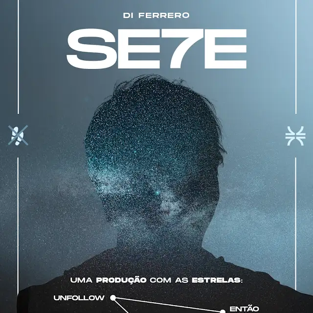
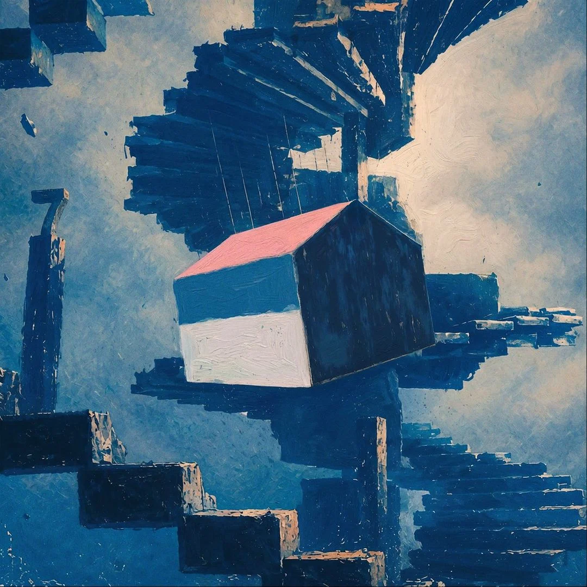

Intro Se7e
Abertura de clima ritual.
novo álbum
Uma entrada imersiva no ciclo visual e sonoro de SE7E.

Di Ferrero
Uma página fan-made inspirada na fase mais recente de Di Ferrero: arranjos orgânicos, colaborações, contraste emocional e a imagem do clipe atravessando tudo como memória quase transparente.
SE7E se apresenta como um trabalho de maturidade: mais instrumentos, mais respiro humano e uma narrativa visual que cruza tempo, vínculos, transformação e estrada.
A experiência coloca Di Ferrero no centro, com textura de clipe, luz de show e um percurso pensado para quem chega, ouve, vê e sente.

O visual ganha ritmo próprio: capa, vídeo, retrato e previews se conectam em uma página com cara de lançamento especial.
Toque nas prévias e deixe a página respirar como uma sessão do álbum.
Abertura de clima ritual.
Viagem emocional em camadas.
O clipe atravessa a página como textura.
A faixa que ancora a atmosfera visual.
Desapego com pulso pop-rock.
Recomeço depois do caos.
Escapismo e reconstrução.
Afeto, pausa e vulnerabilidade.
Intensidade emocional.
Fechamento do conceito.
O clipe entra como peça central da experiência: imagem grande, textura azul, respiro minimalista e os símbolos do universo SE7E ao redor.
Disponível nas principais plataformas digitais.